Scaling Analysis of Two PDMPs
1 PDMP: A New Frontier of Monte Carlo
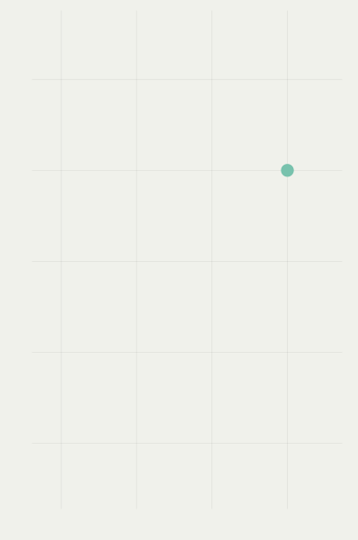
(1953–)
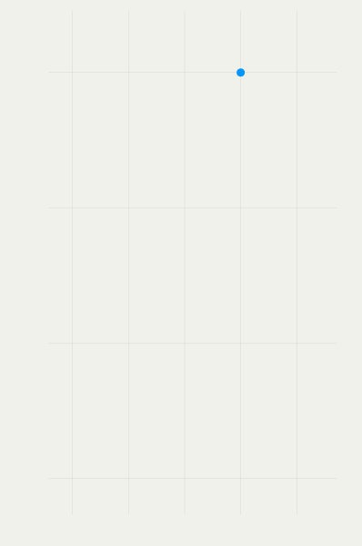
(1978–)
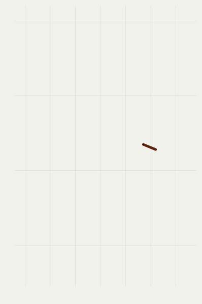
(2008–)
A Blog Entry on Bayesian Computation by an Applied Mathematician
$$
$$
1.1 Piecewise-Deterministic Markov Process
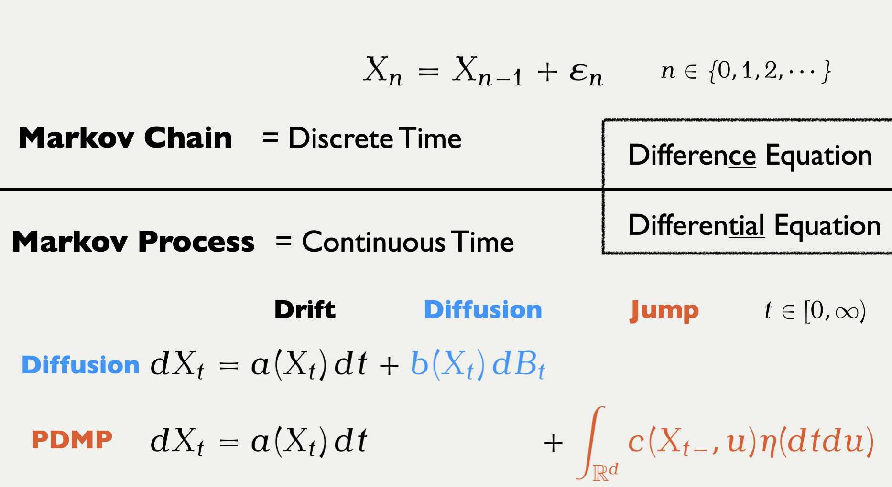
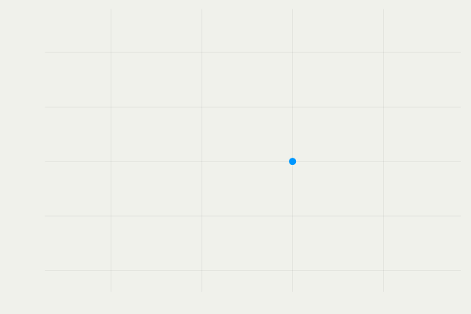
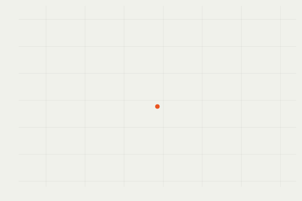
1.2 Markov Chain Monte Carlo
computes space averages as time averages
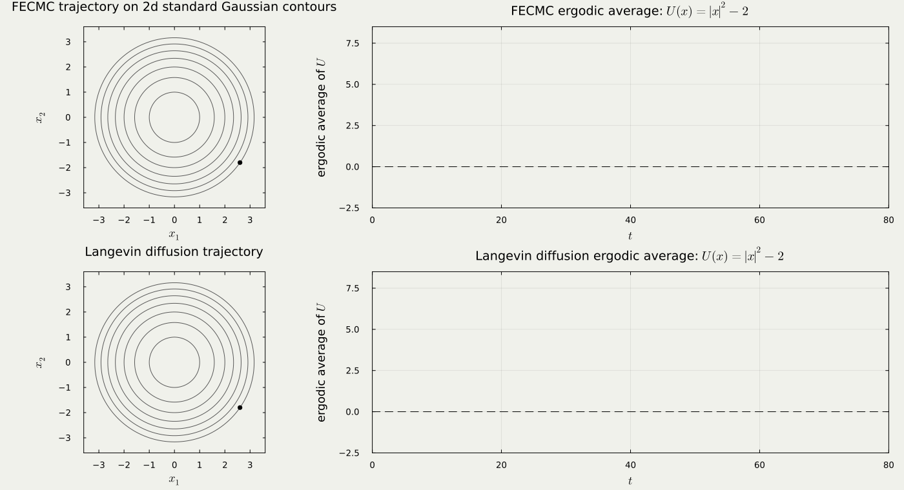
1.3 Persistent Exploration with Hypocoercivity
Kinetic Langevin
\large \begin{cases} \dot{X}_t=V_t,\\ \dot{V}_t=-\big(\nabla U(X_t)+\gamma V_t\big)\,dt+\sqrt{2\gamma}\,dB_t. \end{cases}
Velocity-Jump PDMP
\large \begin{cases} \dot{X}_t=V_{t-},\\ \dot{V}_t=\big(\operatorname{Jump}_{X_t}(V_{t-};\xi_t)-V_{t-}\big)\,dN_t. \end{cases}
2 A Scaling Analysis
We compare two famous PDMP methods under the following condition:
- ODE: Linear flow
- Jump: Reflection + Refreshment vs. Combination
- Target: High dimensional standard Gaussian U(x):=-\log\pi(x)=\|x\|^2/2.
2.1 BPS vs. FECMC: Which is Most Efficient?
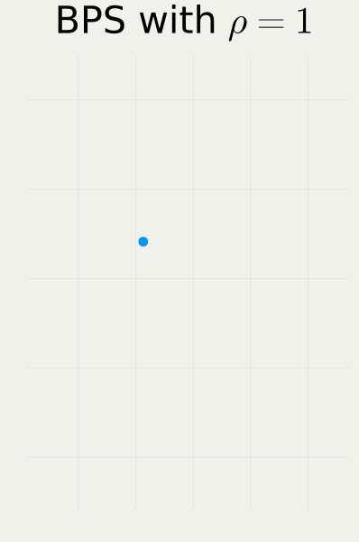
(Bouchard-Côté et al., 2018)
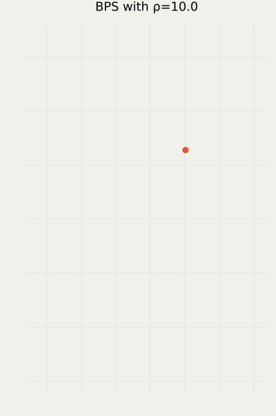
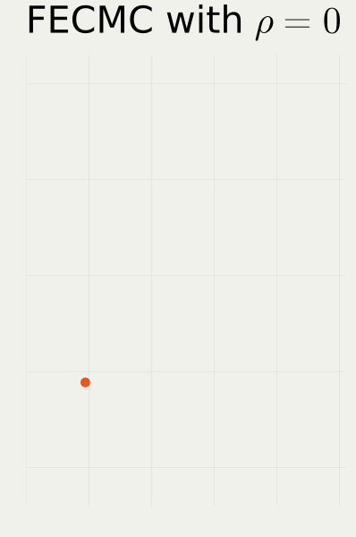
2.2 Jump Mechanisms in BPS vs. FECMC
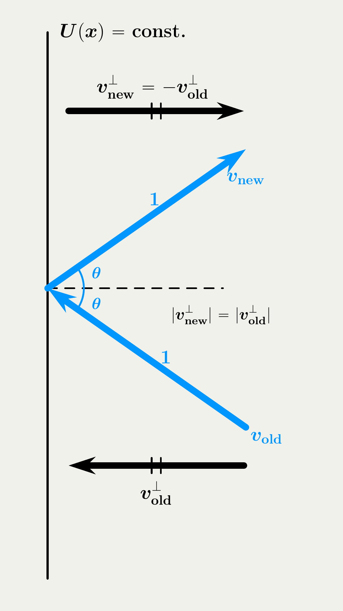
\Large +
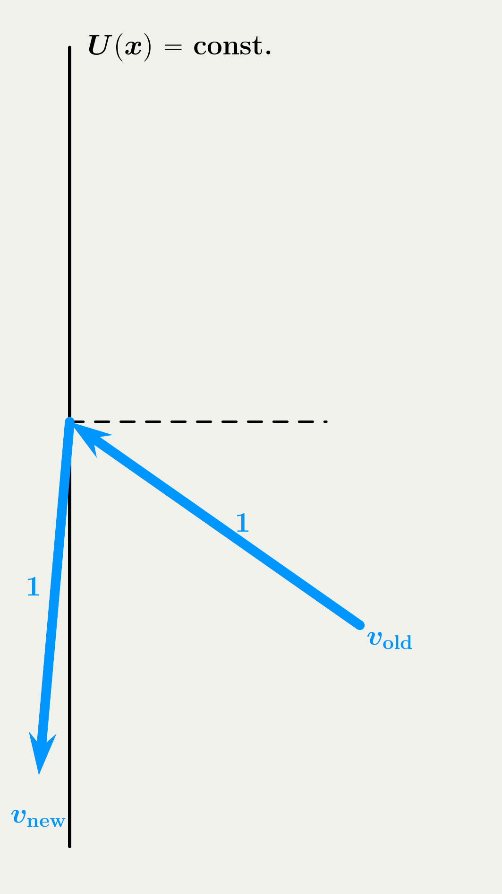
\Large\fallingdotseq
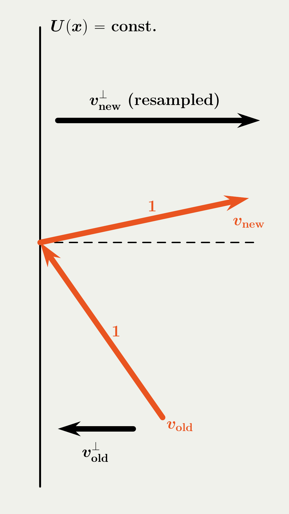
2.3 Empirical Comparison: BPS vs. FECMC
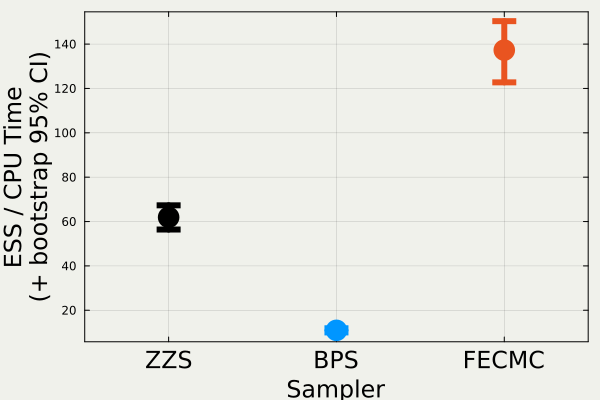
2.4 Scaling Analysis of MCMCs
aims to identify the scaling factor \textcolor{#E95420}{d^{\textrm{\,some \,factor}}} that yields a diffusion limit as d\to\infty
\text{Plotting } \textcolor{#0096FF}{Y_t^{(d)}}=\frac{\|\textcolor{#0096FF}{X}_{\textcolor{#E95420}{d}\textcolor{#0096FF}{t}}^{\textcolor{#0096FF}{(d)}}\|^2-d}{\sqrt{d}} \text{ with } d=10^2,10^3,10^4:
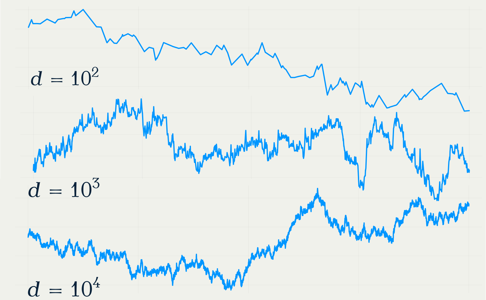
2.5 Theorem 1: Diffusion Limits of the Rescaled Energy
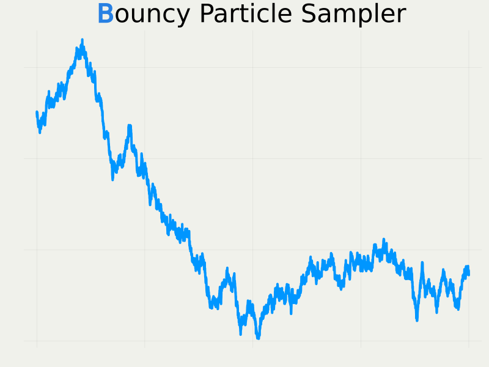
dY_t^{\textcolor{#0096FF}{\text{B}}}=-\frac{\sigma^2_{\textcolor{#0096FF}{\text{B}}}(\rho)}{4}Y_t^{\textcolor{#0096FF}{\text{B}}}\,dt+\sigma_{\textcolor{#0096FF}{\text{B}}}(\rho)\,dB_t \sigma^2_{\textcolor{#0096FF}{\text{B}}}(\rho)=8\int^\infty_0e^{-\rho s}\operatorname{E}[R_0^{\textcolor{#0096FF}{\text{B}}}R_s^{\textcolor{#0096FF}{\text{B}}}]\,ds
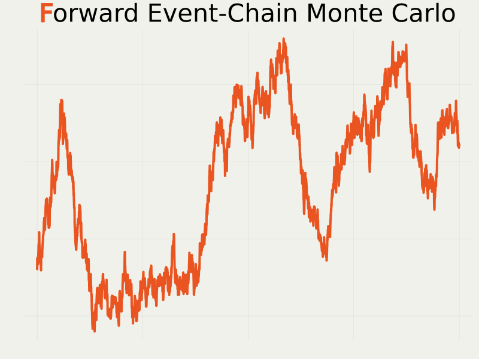
dY_t^{\textcolor{#E95420}{\text{F}}}=-\frac{\sigma^2_{\textcolor{#E95420}{\text{F}}}(\rho)}{4}Y_t^{\textcolor{#E95420}{\text{F}}}\,dt+\sigma_{\textcolor{#E95420}{\text{F}}}(\rho)\,dB_t \sigma^2_{\textcolor{#E95420}{\text{F}}}(\rho)=8\int^\infty_0e^{-\rho s}\operatorname{E}[R_0^{\textcolor{#E95420}{\text{F}}}R_s^{\textcolor{#E95420}{\text{F}}}]\,ds
2.6 Theorem 2: Analytic Expressions of \sigma^2
\sigma^2_{\textcolor{#E95420}{\text{FECMC}}}(0)=\sqrt{\frac{32}{\pi}},\quad\sigma^2_{\textcolor{#0096FF}{\text{BPS}}}(0)=0, \begin{align*} \sigma^2_{\textcolor{#E95420}{\text{FECMC}}}(\rho)&=\sqrt{\frac{32}{\pi}}\biggr(1-\frac{\left(\rho^2-\rho\sqrt{\frac{\pi}{2}}+\Omega(\rho)\right)^2}{\rho^4\Omega(\rho)(2-\Omega(\rho))}\biggl),\quad\rho>0\\ \sigma^2_{\textcolor{#0096FF}{\text{BPS}}}(\rho)&=\frac{8}{\rho^4}\left(\rho^3-\rho^2\sqrt{\frac{8}{\pi}}+\rho-\sqrt{\frac{8}{\pi}}\frac{\left((1+\rho^2)\Omega(\rho)-\rho^2\right)^2}{\Omega(2\rho)}\right), \end{align*}
where \Omega(\rho)\coloneqq\sqrt{\frac{\pi}{2}}\rho\operatorname{erfcx}\left(\frac{\rho}{\sqrt{2}}\right)=\rho e^{\frac{\rho^2}{2}}\int^\infty_\rho e^{-\frac{t^2}{2}}\,dt satisfies \Omega(\rho)=1-\operatorname{E}[e^{-\rho\tau}] for \tau\sim\operatorname{Rayleigh}(1).
2.7 Theorem 2 (cont.): Plot of \sigma^2
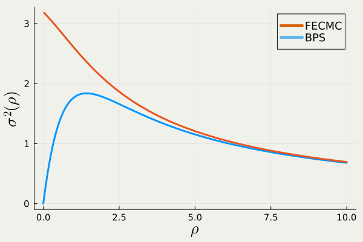
3 Proofs
- The hypocoercivity / slow-fast structure complicates the standard proof approach
- The potential U(X_t)=\|X_t\|^2/2 evolves on a slow timescale.
- Its time derivative \textcolor{#E95420}{R_t}:=(X_t|V_t)=dU(X_t)/dt fluctuates on a fast timescale.
- Spectral properties of \textcolor{#E95420}{R} are reflected in \sigma^2
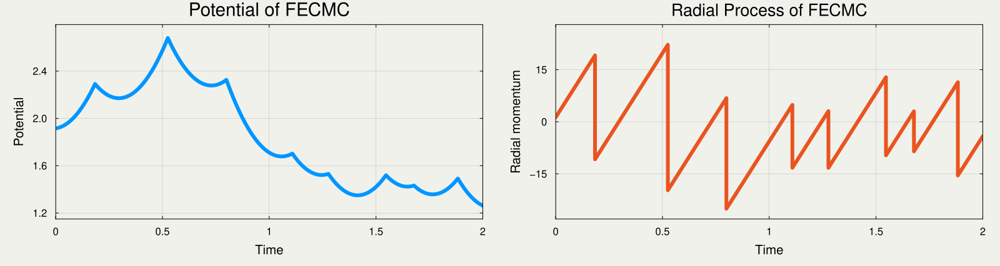
3.1 The Non-Markovianity of the Rescaled Energy Y^d
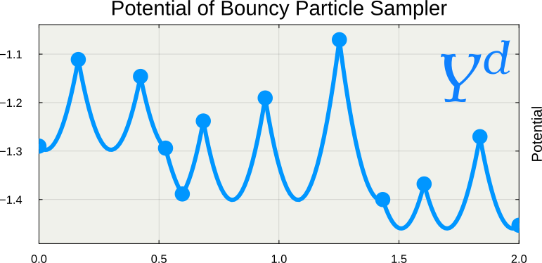
Y^d_{t-} alone cannot determine the speed of Y^d_t at jumps.
3.2 Goal: Solve the Limiting Martingale Problem
For any \varphi\in C^\infty_c(\mathbb{R}), the following is a local martingale: M^\varphi_t:=\varphi(Y_t)-\varphi(Y_0)-\int^t_0\mathcal{L}\varphi(Y_s)\,ds.
Same foundation, different language.
3.3 The Event-Time Skeleton Reveals Local Averaging
Difficult to see how C_t=\sigma^2t emerges.
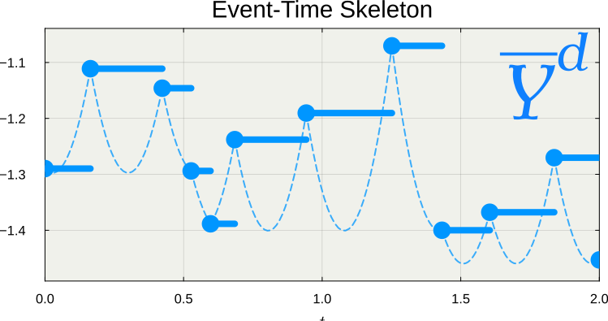
Leads directly to the limit C_t=\sigma^2t.
We then prove the asymptotic equivalence of these two.
3.4 \sigma^2 as the CLT Variance of Time-Derivative \textcolor{#E95420}{R}
From Theorem 1, we see \begin{align*} \frac{\sigma^2(\rho)}{4}=2\int^\infty_0e^{-\rho t}\operatorname{E}[\textcolor{#E95420}{R_0R_t}]\,dt=\lim_{T\to\infty}\frac{1}{T}\operatorname{Var}\left[\int^T_0\textcolor{#E95420}{R_t^{(\rho)}}\,dt\right]. \end{align*} Therefore, \sigma^2/4 is the asymptotic variance of the ergodic average of \textcolor{#E95420}{R_t^{(\rho)}}.
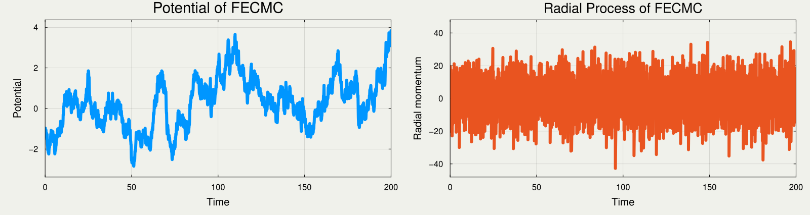
3.5 \sigma^2(\rho) and Resolvent Equations \textcolor{#E95420}{R}
From Theorem 1, we see \begin{align*} \frac{\sigma^2(\rho)}{4}=2\int^\infty_0e^{-\rho t}\operatorname{E}[\textcolor{#E95420}{R_0R_t}]\,dt=\lim_{T\to\infty}\frac{1}{T}\operatorname{Var}\left[\int^T_0\textcolor{#E95420}{R_t^{(\rho)}}\,dt\right]. \end{align*} Therefore, \sigma^2/4 is the asymptotic variance of the ergodic average of \textcolor{#E95420}{R_t^{(\rho)}}.
Pushing the calculation further using Fubini’s theorem, =2\operatorname{E}\biggl[\textcolor{#E95420}{R_0}\underbrace{\int^\infty_0e^{-\rho t}\operatorname{E}[\textcolor{#E95420}{R_t}|\textcolor{#E95420}{R_0}]\,dt}_{=:f_\rho(\textcolor{#E95420}{R_0})}\biggr]=2\operatorname{E}[\textcolor{#E95420}{R_0}f_\rho(\textcolor{#E95420}{R_0})], where f_\rho solves the resolvent equation of \textcolor{#E95420}{R} (\rho-\mathcal{L}_{R})f_\rho(x)=x where \mathcal{L}_{R} is the generator of \textcolor{#E95420}{R}. This can be explicitly solved. (cf. Bierkens and Lunel, 2022)
3.6 The Most Simple Case: \sigma^2(0) and Poisson Equations
Taking \rho\to0, the resolvent equation reduces to -\mathcal{L}_Rf_0(x)=x\quad\text{Poisson eq.} This can be solved in each sampler:
| Sampler | Solution | \sigma^2(0)=8\mathbb{E}[R_0f_0(R_0)] |
|---|---|---|
| BPS | \displaystyle f_0^{\textcolor{#2780e3}{B}}(x)=\frac{1-x^2}{2} | 0 |
| FECMC | \displaystyle f_0^{\textcolor{#E95420}{F}}(x)=\frac14-\frac12\min(x,0)^2 | \displaystyle\sqrt{\frac{32}{\pi}} |
The limiting mixing speed of Y^d, governed by \sigma^2, is determined by the accumulated fluctuations of the fast process R^d.
Kipnis-Varadhan theory (Cattiaux et al., 2011) can systematically guarantee a CLT and that its variance is \sigma^2(0).
4 Asymptotic Variance Estimation for PDMP in High Dimensions
\frac{16}{\sigma^2}=\lim_{T\to\infty}T\operatorname{Var}\!\left[\frac1T\int_0^T \textcolor{#2780e3}{Y_t}\,dt\right], \sigma^2=4\lim_{T\to\infty}T\operatorname{Var}\!\left[\frac1T\int_0^T \textcolor{#E95420}{R_t}\,dt\right].
Estimators for quadratic variation \sigma^2 are equivalent to batch means estimators applied to time derivative R, providing a fast alternative to those for \textcolor{#0096FF}{Y_t^{(d)}}=\frac{\|\textcolor{#0096FF}{X}_{\textcolor{#E95420}{d}\textcolor{#0096FF}{t}}^{\textcolor{#0096FF}{(d)}}\|^2-d}{\sqrt{d}}.
4.1 ESS of \textcolor{#0096FF}{Y_t}
The Monte Carlo estimator (= ergodic average of \textcolor{#0096FF}{\{X_t\}}) \widehat{h}_T^d:=\frac{1}{T}\int^T_0\textcolor{#0096FF}{U(X_t^{(d)})}\,dt has the following variance ratio under the double limit: \lim_{T\to\infty}\lim_{d\to\infty}T\frac{\operatorname{Var}[\widehat{h}_{\textcolor{#E95420}{d}T}^d]}{\operatorname{Var}_\pi[\textcolor{#0096FF}{U}]}=\frac{8}{\sigma^2}\approx2.50\cdots. ESS equals the inverse of this variance ratio.
4.2 Theory Matches Practice: FECMC vs. BPS
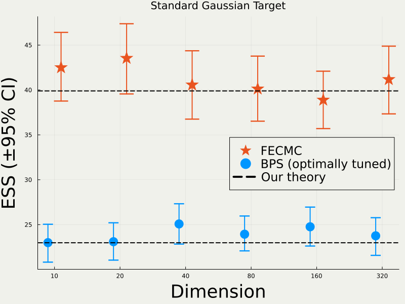
4.3 \sigma^2 is unknown for General Targets
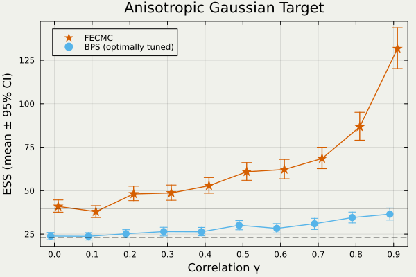
4.4 Asymptotic Variance Estimation for Discrete-Time MCMC
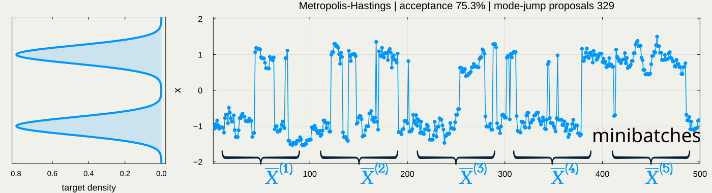
\text{Markov Chain CLT: }\quad\frac{1}{\sqrt{N}}\sum_{n=1}^NX_n\Rightarrow N(0,\sigma^2_{\text{asym}})\quad(N\to\infty). For mini-batches b=1,\cdots,B with length m:=N/B, \operatorname*{{Batch\; Means\; Estimator:}} \text{ }\quad\widehat{\sigma^2}_\text{asym}:=\frac{m}{B-1}\sum_{b=1}^B\left(\textcolor{#0096FF}{\overline{{X}}^{(b)}}-\textcolor{#0096FF}{\overline{{X}}}\right)^2, where \textcolor{#0096FF}{\overline{{X}}^{(b)}}=\frac{1}{m}\sum_{n=1}^m\textcolor{#0096FF}{X_{n+(b-1)m}} is the mean over the b-th batch.
4.5 Optimal Batch Size for Discrete-Time MCMC & PDMP
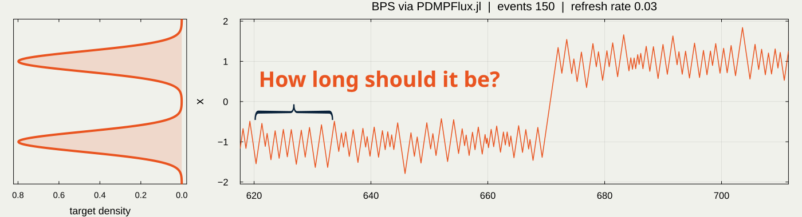
4.6 Diffusivity Estimation for High-dimensional PDMPs
= Quadratic Variation (QV) Estimation under Misspecification
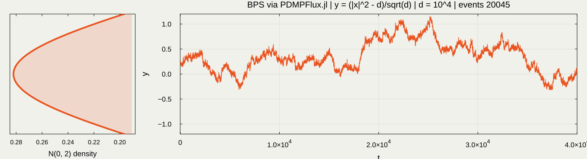
The Realized Volatility estimator (Barndorff-Nielsen and Shephard, 2002) \widehat{Q}^d:=\frac{1}{T}\sum_{n=1}^N\biggr(Y_{\Delta n}^d-Y_{\Delta(n-1)}^d\biggl)^2,\quad T=\Delta N, converges to \sigma^2 under the conditions \Delta\to0,\quad d\to\infty,\quad\Delta d\to\infty.
4.7 Experiment: QV Estimator Improves with Dimension
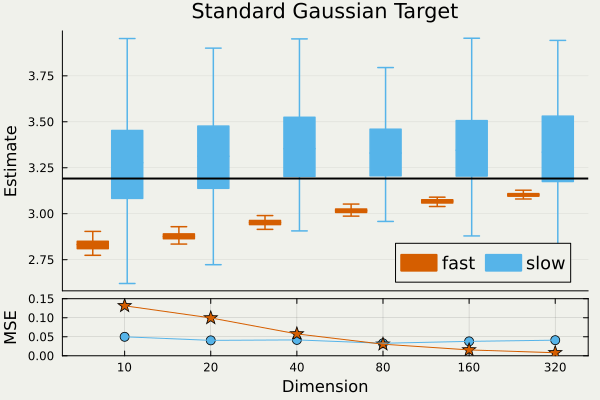
4.8 Experiment (cont.): QV Estimator Improvement
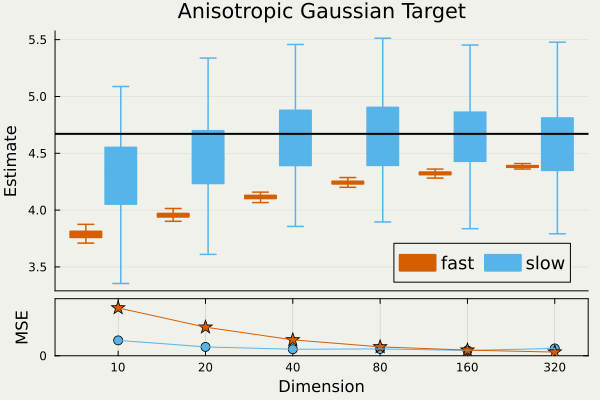
4.9 Batch Size Selection for the QV Estimator
\fallingdotseq selecting the sampling step size \Delta under Misspecification (Aït-Sahalia et al., 2011)
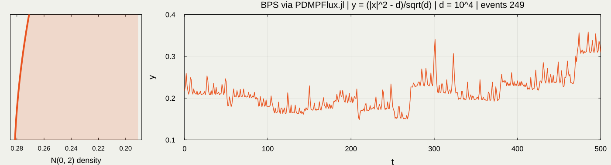
For too small / large \Delta, \widehat{Q}^{d}(\Delta)\approx0. The optimal choice seems to be \Delta=O(d^{1/2}).
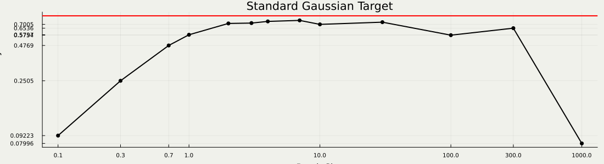
Conclusion
- Reducing redundant noise produces a more efficient algorithm: BPS → FECMC
- FECMC has larger \sigma^2 because its noise in R^d is effective
- Radial mixing in piecewise-linear PDMPs is essentially determined by R^d
- Continuous-time MCMC allows more efficient estimators for asymptotic variance
- potentially works whenever a diffusion limit exists
- with a sensible choice of the batch size
References
Appendix
PDMP as a New Discretisation Scheme
Many PDMP and MCMC behave similarly in high dimensions (Deligiannidis et al., 2021)
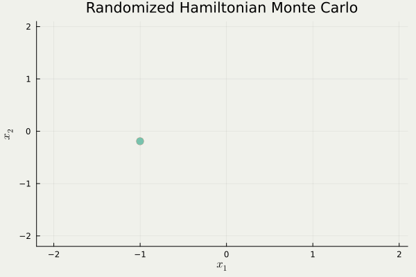
discretized by a symplectic integrator
e.g. HMC has O(d^{1.25}) complexity
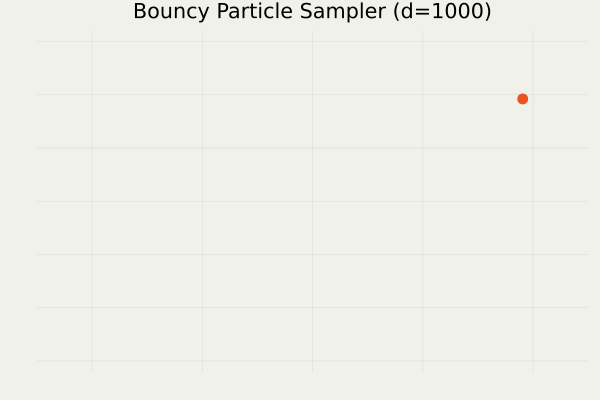
simulate piecewise linear trajectory
e.g. BPS with normal velocity has O(d^{1.5}) complexity
In Passing… Some Killer Applications of PDMP
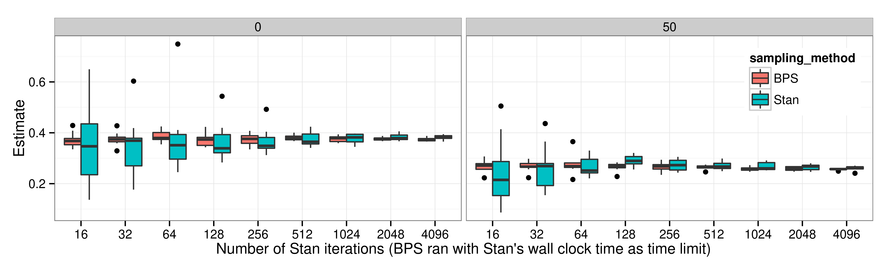
Sparse Markov Random Field with d=10
O(d^1) Local Implementation
Exploiting sparsity, BPS atteins better scaling than HMC (MSE/sec.)
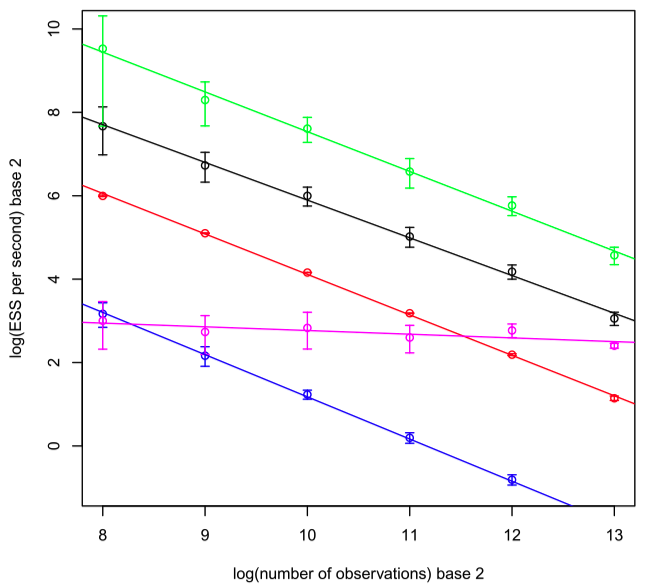
(Bierkens et al., 2019)
Stochastic Gradient O(n^0)
Using an appropriate control variate, Zig-Zag attains O(1) complexity
in the limit of n\to\infty, it outperforms Langevin.
課題：非一様 Poisson 点過程のシミュレーション
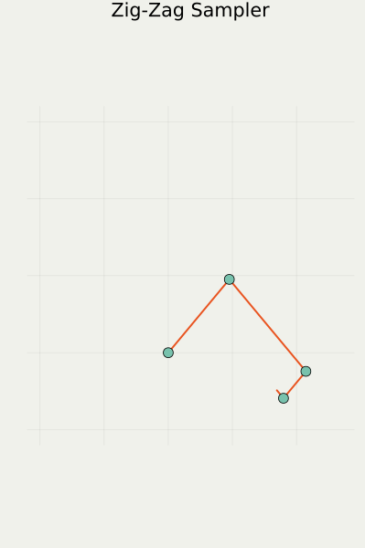
直観：１次元の場合
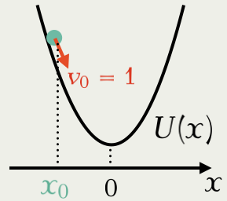
１次元の Gauss 分布を考える：
\pi(x)=\frac{1}{\sqrt{2\pi\sigma^2}}e^{-\frac{x^2}{2\sigma^2}} \therefore\quad U(x):=-\log\pi(x)=\frac{x^2}{2\sigma^2}+\mathrm{const.}
負の対数尤度 U=-\log\pi は ポテンシャル ともいう．
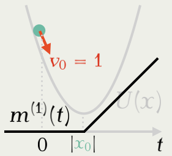
\begin{align*} m^{(1)}(t)&=(v_0\cdot U'(\textcolor{#78C2AD}{x_0}+\textcolor{#E95420}{v_0}t))_+\\ &=(\textcolor{#78C2AD}{x_0}+\textcolor{#E95420}{v_0}t)\cdot1{\left\{\textcolor{#78C2AD}{x_0}+\textcolor{#E95420}{v_0}t>0\right\}},\quad t\ge0, \end{align*} を強度にもつ 非一様 Poisson 点過程 の最初の到着時刻 T_1^{(1)} について，\textcolor{#78C2AD}{x_1}=\textcolor{#78C2AD}{x_0}+\textcolor{#E95420}{v_0}T_1^{(1)} とすれば良い．